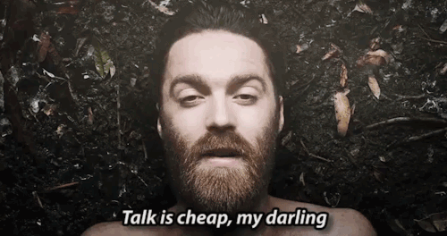

Chet Faker, nacido Nicholas James Murphy (Melbourne, 23 de junio de 1988), es un músico y DJ australiano de Electrónica y Trip Hop. En 2012 firmó con Downtown Records en los Estados Unidos y emitió un extended play, “Thinking in Textures”.1 En octubre de ese año ganó 'Artista Revelación del Año y "Thinking in Textures” ganó' Mejor Single Independiente / EP 'a los australianos Records Independent Awards.2 En enero de 2013, la obra ganó 'Mejor Lanzamiento Independiente "en los Premios Rolling Stone Australia para 2012. Su versión de la canción “No diggity” fue utilizada en un comercial para Beck's Sapphire en la Superbowl del 2013.3 Recientemente tiene un álbum debutante: "Built on Glass” que fue lanzado el 2014 a través de Future Classic / Downtown.
